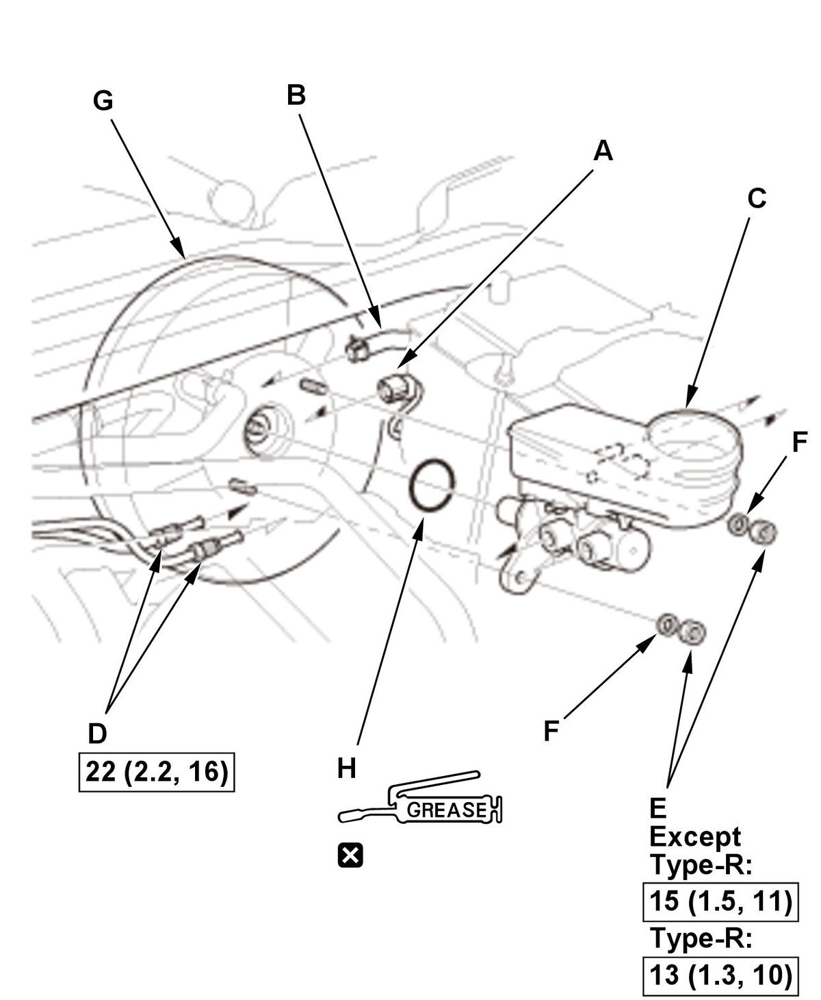

Removal and Installation
NOTE:
- How to read the torque specifications .
- Review the Service Precautions before doing repairs or service .
- Press the brake pedal several times to deplete the vacuum in the brake booster.
- Be careful when handling the master cylinder. Do not hold it at the piston, or the piston may separate from the body. If the piston separates from the body, then the master cylinder must be replaced. Do not reinsert the piston back into the master cylinder body.
- M/T: The master cylinder reservoir is shared with the brake system and the clutch system. Bleed the air foam from the brake system and the clutch system after installing the master cylinder.
- Unless otherwise indicated, illustrations used in the procedure are for 1.5L engine.
- Brake Fluid - Remove
1. Remove the brake fluid from the master cylinder reservoir with a syringe. - 12 Volt Battery - Remove (Canada Models). Refer to 12 Volt Battery Removal and Installation (USA Models/Mexico Models) , or 12 Volt Battery Removal and Installation (Type-R) (2017 2018 2019 2020 2021)
- Baffle Plate - Remove (USA and Mexico models)
- Master Cylinder - Remove
1. Remove the wire harness mounting bolts (A). 
Courtesy of HONDA, U.S.A., INC.2. Disconnect the connector (A). 3. M/T: Disconnect the clutch reservoir hose (B) from the master cylinder reservoir (C).
4. Disconnect the brake lines (D) from the master cylinder. To prevent spills, cover the hose joints with clean rags or shop towels.
5. Remove the nuts (E).
6. Except Type-R: Remove the washers (F).
7. Remove the master cylinder from the brake booster (G).
8. Remove the O-ring (H) from the master cylinder.
NOTE:
- Replace the O-ring whenever the master cylinder is removed.
- Make sure not to get any silicone grease on the terminal part of the connectors and switches, especially if you have silicone grease on your hands or gloves.
- During installation, note these items:
-
- Coat the new O-ring with the silicone grease (Shin-Etsu G40M).
- Type-R: Check the brake booster pushrod clearance .
- All Removed Parts - Install
1. Install the parts in the reverse order of removal. - Brake System - Bleed
- Clutch Hydraulic System - Bleed (M/T)
- Brake Pedal Height and Free Play - Check
- Brake Drag - Check
1. Spin the wheels to check for brake drag.